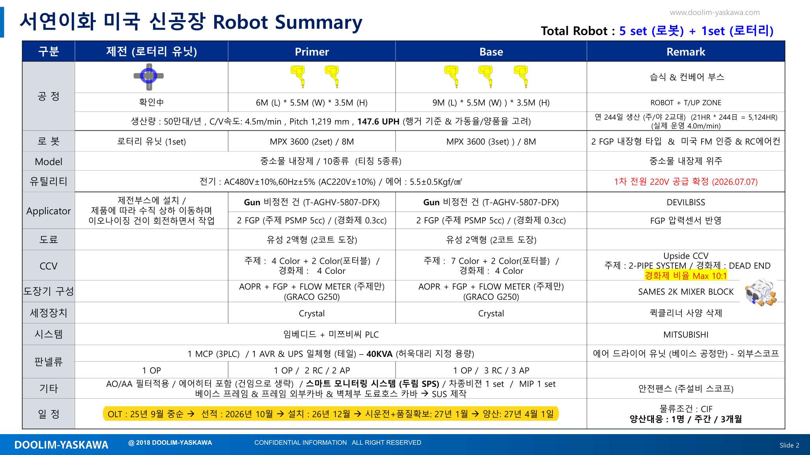

예상 프로젝트 단계는 모듈라이며, 모듈라는 준비중으로 도면 작업이 이어지고 있습니다. 최근 10/27 모듈라 설치위치가 바뀌었습니다.
일 정 | OLT : 25년 9월 중순 선적 : 2026년 10월 설치 : 26년 12월 시운전+품질확보: 27년 1월 양산: 27년 4월 1일
꾸준히 작업승인도 묶음을 두 번 올린 뒤, 지금은 제작도를 하루 한두 개씩 고치는 중입니다.
잦아듦9월 초에 핵심 부품을 몰아서 발주했고, 지금은 작업용품만 가끔 이어집니다.
예상 프로젝트 단계는 현장이며, 모듈라는 문서 정리 중입니다. 최근 10/19 현장 단계로 바뀐 뒤 다른 활동은 없습니다.